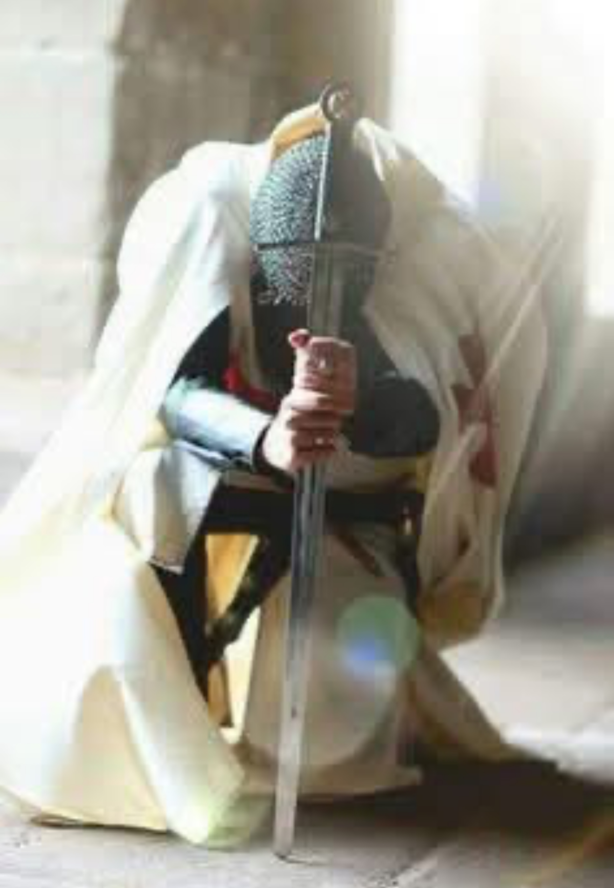
Insignes & Tenues : bagues, manteau, médailles & épée
Cette section présente, de manière claire et publique, quelques éléments visuels utilisés par l’O.S.D.9.T.D.J. Il s’agit d’insignes associatifs et d’éléments de tenue à vocation symbolique et protocolaire (usage culturel, pédagogique et représentatif), sans prétention de filiation juridique avec l’Ordre du Temple médiéval.
Bague(s) de l’Ordre — identité, engagement et repère
Les bagues de l’O.S.D.9.T.D.J. ne sont pas des insignes « de pouvoir » : elles servent de repère visuel, de rappel d’engagement et de marque d’appartenance à une démarche culturelle, éducative et caritative. Elles peuvent varier selon les séries, les finitions ou l’usage (tenue, cérémonie, présentation).
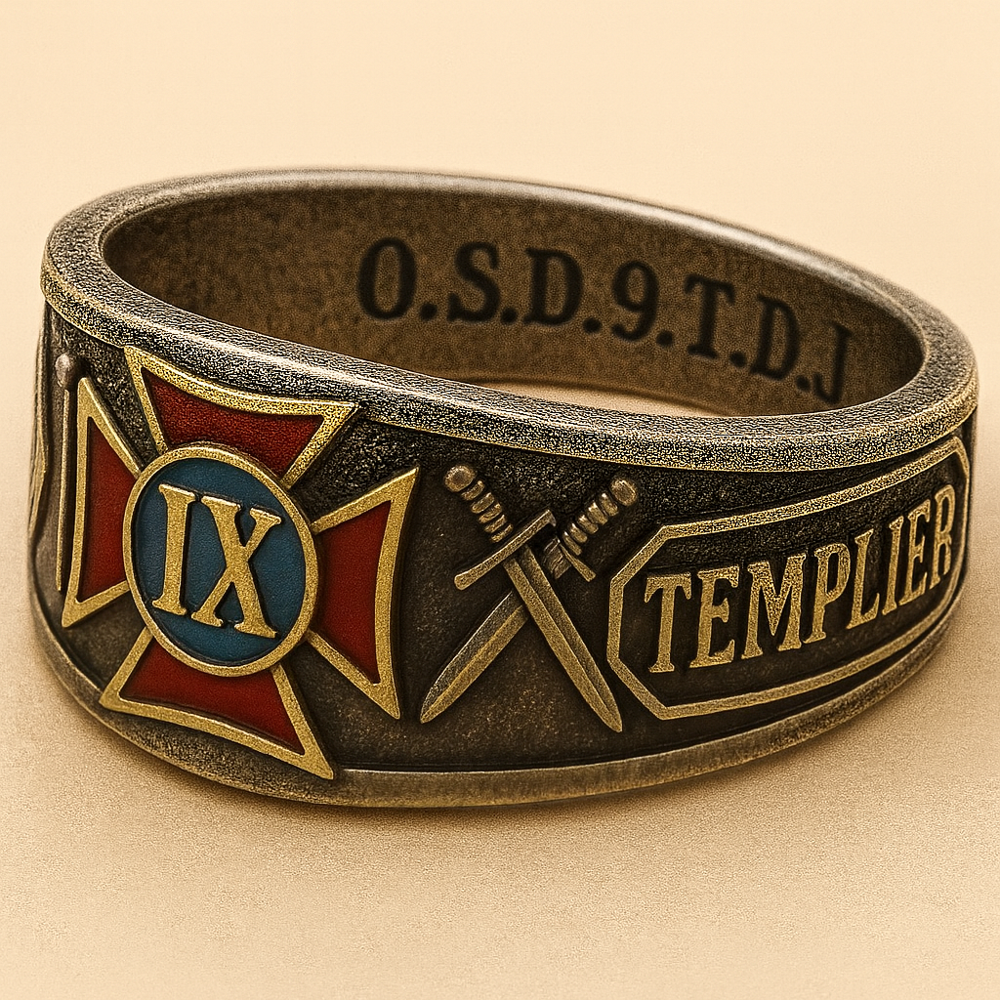
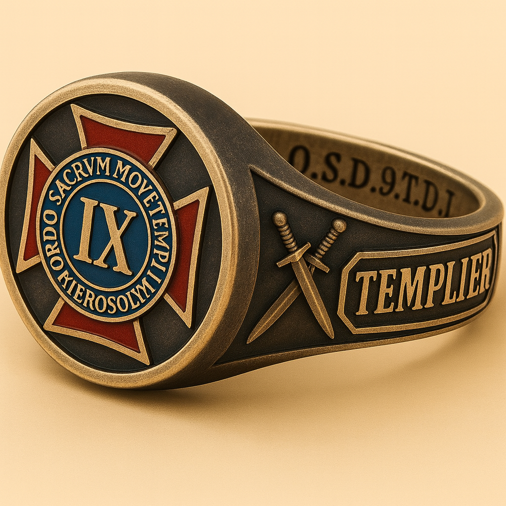
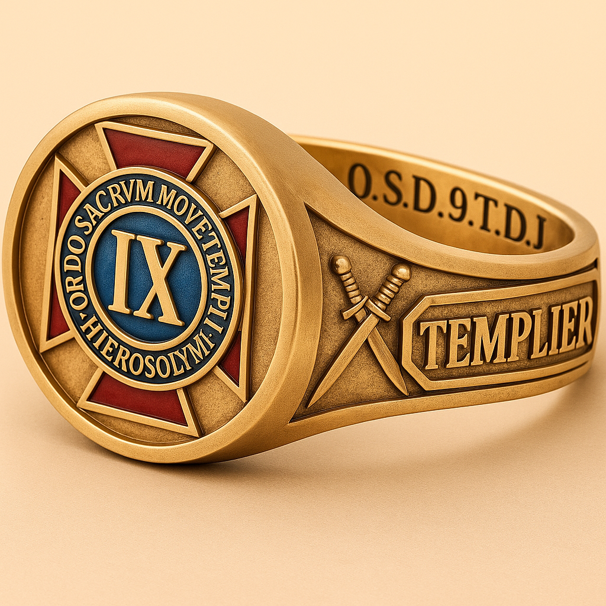
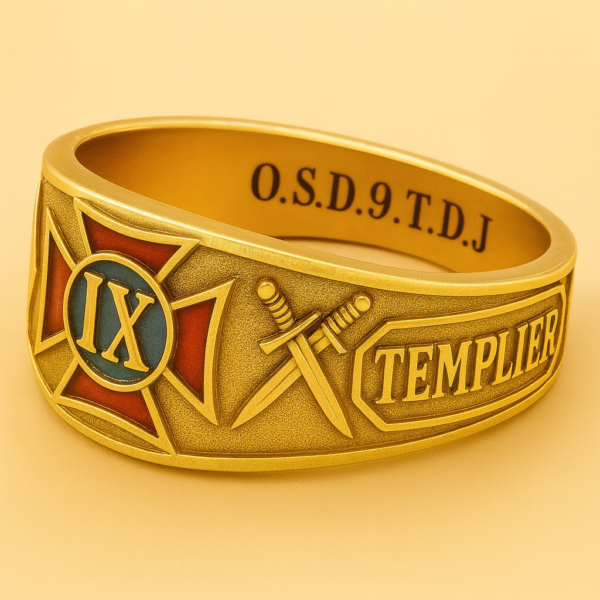
Manteau — tenue de représentation
Le manteau est un élément de tenue de représentation : il vise l’unité visuelle lors des événements, des cérémonies internes ou des prises de vues protocolaires. Il rappelle la sobriété et la discipline : porter une tenue, c’est surtout porter une exigence de conduite et de cohérence.
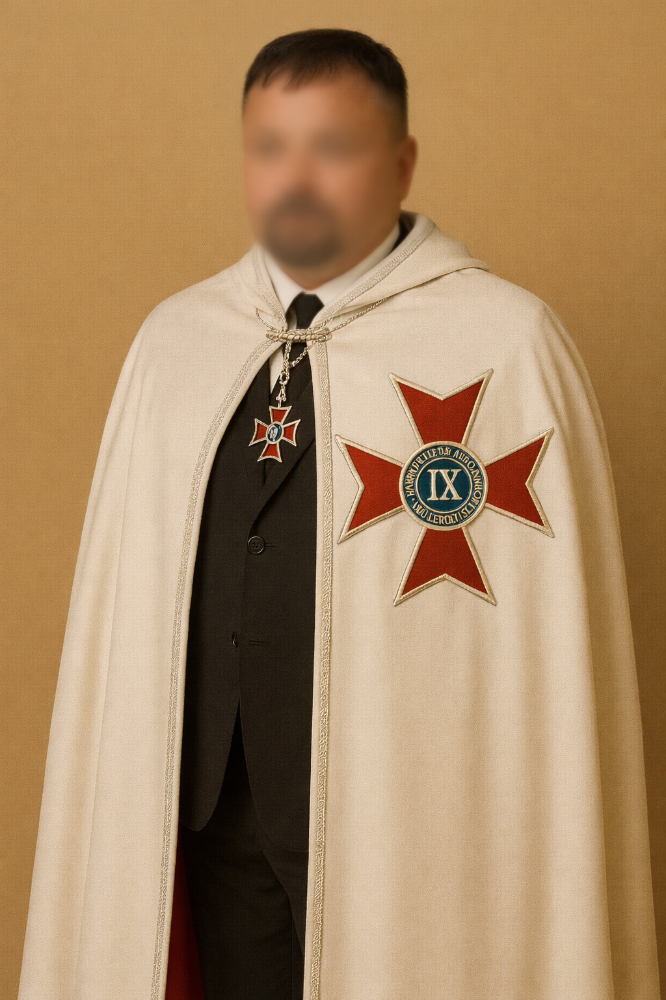
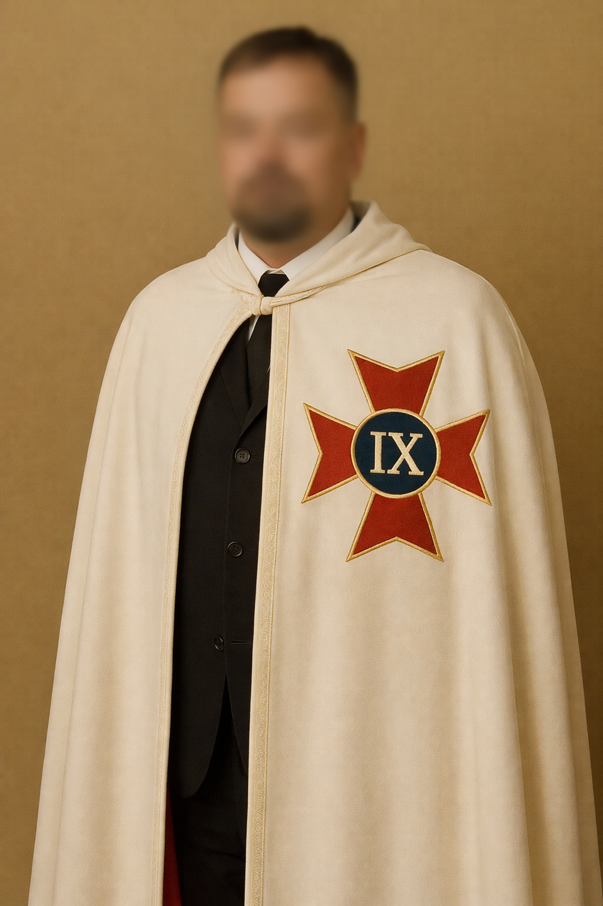
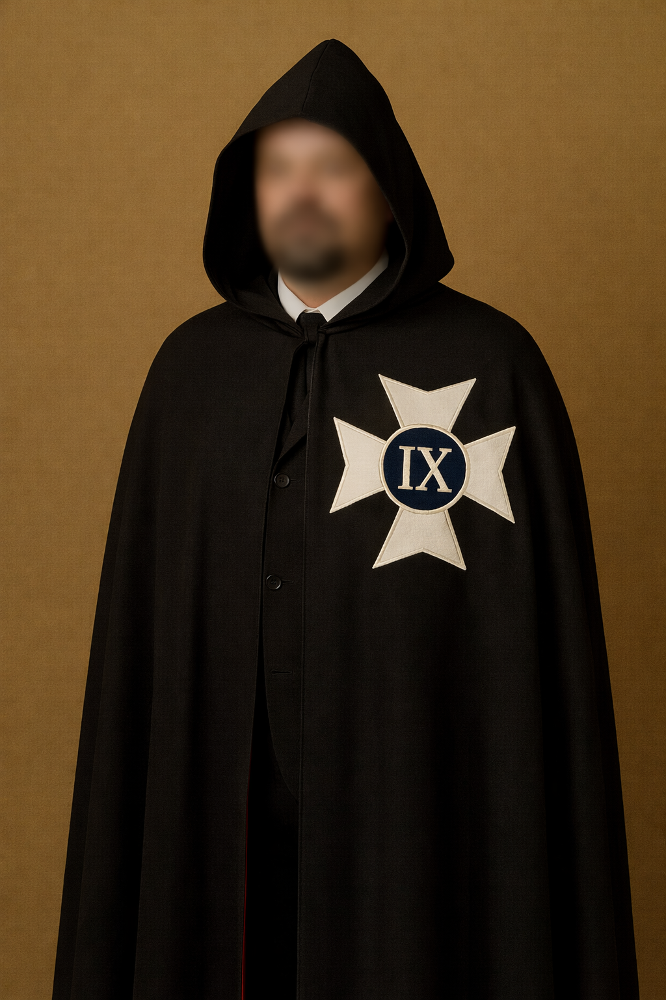
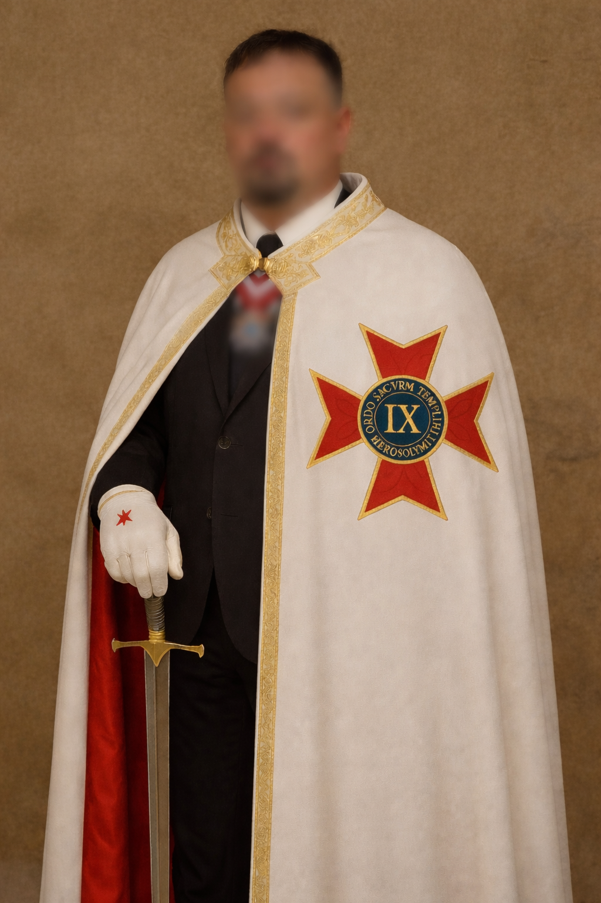
Médailles — distinctions associatives
Les médailles présentées ci-dessous sont des distinctions associatives : elles matérialisent une reconnaissance, un rôle, un service rendu ou une participation à la vie de l’Ordre. Elles sont utilisées dans un cadre interne et protocolaire, selon les règles de l’association, sans assimilation à des décorations officielles d’État.
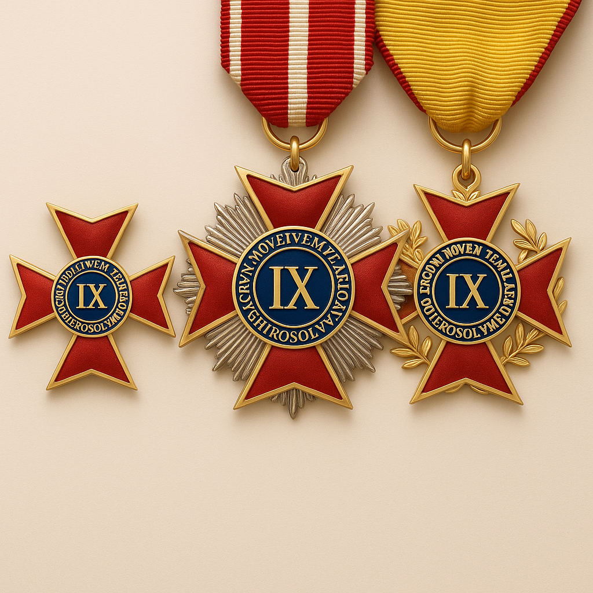
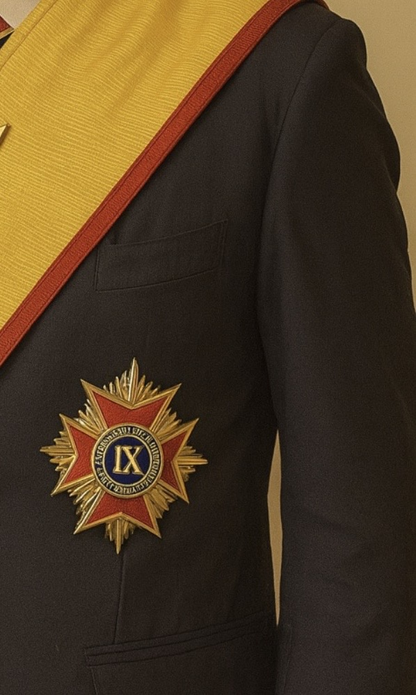
Épée — symbole de serment et de responsabilité
L’épée relève d’un langage symbolique : elle représente la parole donnée, la droiture, et la responsabilité de protéger et servir. Dans l’O.S.D.9.T.D.J., elle est comprise comme un rappel de la maîtrise de soi : la force n’a de sens qu’orientée vers le bien, la justice, et la vérité.
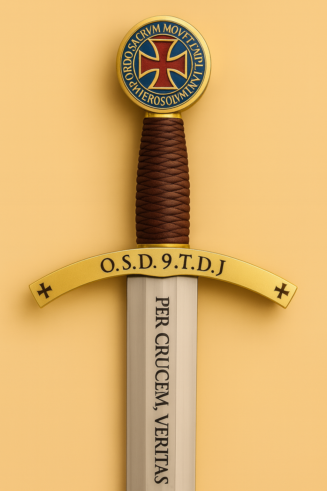
ORDRE SACRÉ DES NEUF TEMPLIERS DE JÉRUSALEM
Emblème & Logo
Chaque tradition chevaleresque se reconnaît à ses signes. Les nôtres ne sont ni des ornements gratuits, ni des « codes secrets » destinés à exclure : ce sont des repères de mémoire, des outils pédagogiques et des marqueurs d’identité d’une association laïque et culturelle régie par la loi de 1901.
Cette page présente, pour le grand public, l’ensemble des emblèmes de l’O.S.D.9.T.D.J. : le blason, le drapeau (Beauceant), la croix et les sceaux. Les explications proposées relèvent d’une lecture historique, culturelle et symbolique : elles ne constituent ni revendication religieuse, ni prétention à une continuité juridique avec l’Ordre du Temple médiéval.
Information grand public : ce contenu est volontairement destiné à une consultation en ligne, simple et accessible. Pour en savoir davantage, approfondir, ou découvrir la réalité concrète de notre démarche, le meilleur chemin est de venir à l’Association : c’est précisément l’un des buts de l’O.S.D.9.T.D.J.
Notre blason : une « table d’étude » en langage héraldique
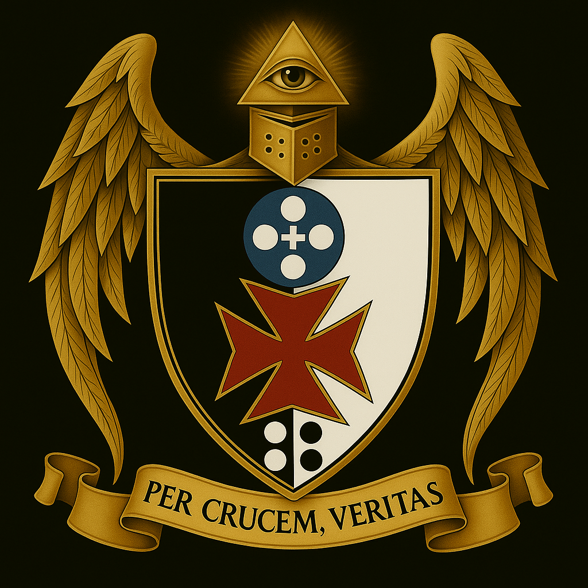
Protection & droits : l’ensemble de nos logos, blasons, sceaux, signes, devises et éléments graphiques est déposé et protégé. Toute reproduction, copie, diffusion, modification ou réutilisation — même partielle — est interdite sans autorisation écrite. Pour en savoir plus, le bon chemin est simple : venir à l’association et échanger avec nous.
Le Blason et sa signification
Notre blason est une table d’étude templier :
• Noir & blanc : héritage du Beauceant (bannière mi-noire mi-blanche), union des contraires et mesure dans l’action.
• Carré de quatre cercles : fondations stables — les quatre éléments (terre, air, feu, eau), la matière brute à transformer.
• Roue de la vie (quintessence) : croix blanche centrale et quatre cercles blancs sur fond bleu. L’ensemble figure les cinq sens et la quête du cinquième principe (quintessence).
- Blanc au centre : clarté, équilibre. Bleu : profondeur, sagesse, ciel.
- La croix blanche agit ici comme pivot symbolique de la quintessence, laquelle se déploie en mouvement équilibré, reposant sur la cathénaire des quatre fondations élémentaires à la base de l’écu.
• La croix angélique rouge & or : attribution traditionnelle aux Templiers vers 1147 dans le contexte de la Seconde Croisade.
- Le rouge évoque le sacrifice, le courage et la fidélité.
- L’or évoque l’accomplissement, la gloire et la lumière de l’œuvre achevée.
- Sa forme angélique exprime les huit pointes, rappel de vertus et d’un cycle de régénération.
⚖️ La croix à huit pointes adoptée par l’Ordre Sacré des Neuf Templiers de Jérusalem se distingue, par son traitement chromatique, des insignes historiques ou contemporains des autres ordres :
– Ordre de Malte : croix blanche sur fond noir ou rouge, emblème officiel et protégé ;
– Ordre de Saint-Lazare : croix verte, parfois bordée de blanc ou d’or ;
– autres ordres hospitaliers : croix blanches ou noires selon les usages traditionnels.
L’Ordre utilise une croix stylisée en rouge et or, éventuellement entourée de liserés dorés, afin de marquer sa différence visuelle et symbolique. Cette déclinaison chromatique n’imite ni ne reproduit les insignes officiels protégés : elle exprime uniquement une valeur culturelle et décorative.
Ainsi, le rouge rappelle le courage et le sacrifice, tandis que l’or évoque la lumière et l’accomplissement. Ces choix, conformes au langage héraldique, garantissent une identité propre à l’association et écartent toute confusion avec les emblèmes des ordres hospitaliers ou souverains.
• Casque templier : discipline, vigilance, force intérieure ; l’armure de l’esprit.
• Triangle rayonnant & Œil : unité et triade universelle ; regard qui discerne.
• Ailes dorées : élévation et fraternité ; nul chevalier ne progresse seul — il est soutenu par la communauté et l’idéal commun.
Notre croix : tradition templière, « IX » et sens du Nom

La croix que nous utilisons s’inscrit dans la forme pattée, associée à l’imaginaire templier. Sur nos supports, elle est souvent présentée sur un drapeau : non pour « parler du drapeau », mais parce que ce support met en valeur la croix, son cercle central et ses inscriptions.
1) Une croix pattée : un repère visuel et une exigence morale
Cette croix rappelle l’idée de chemin (les quatre directions), d’engagement (tenir sa parole) et de service (agir pour quelque chose de plus grand que soi). Elle est, pour le grand public, un signe immédiatement lisible : celui d’une démarche inspirée par la chevalerie et par la tradition des ordres de service.
2) Le « IX » au centre : les Neuf, la mémoire fondatrice
Le IX rappelle l’esprit des Neuf : une mémoire fondatrice articulée autour de valeurs et d’un idéal de conduite. Dans nos textes internes, ces « neuf colonnes » sont associées à des vertus telles que la confiance, la fraternité, la loyauté, la justice, la force morale, la prudence, la vision, l’équilibre et la bienveillance.
Pour le public, il faut retenir ceci : le « IX » n’est pas un code secret, ni un marqueur d’élitisme. C’est un rappel d’exigence : apprendre, s’élever, et servir avec constance.
3) Ce qui est écrit : du Nom à l’abréviation
Autour du centre, l’inscription renvoie à la dénomination de l’Ordre : Ordre Sacré des Neuf Templiers de Jérusalem, et à son sigle O.S.D.9.T.D.J.. La présence du latin rappelle la tradition des ordres historiques, tout en restant, chez nous, une référence culturelle.
Notre usage des symboles et de la croix est associatif : il relève de la culture, de l’étude, et de la transmission de valeurs. Il ne revendique aucune filiation juridique ou canonique.
Notre sceau : deux cavaliers, une seule monture — fraternité et dépouillement

Le sceau de l’O.S.D.9.T.D.J. est un sceau général de l’Ordre : il n’est pas « le sceau d’un Grand Maître », mais un signe d’identité collective. Il reprend un motif iconique associé aux Templiers : deux cavaliers sur une seule monture.
1) Deux sur un cheval : une image de fraternité
Cette scène parle immédiatement au regard : elle évoque l’idée d’aller ensemble, de se soutenir, et d’avancer d’un même mouvement. Elle peut être lue comme une métaphore de la fraternité : aucune quête n’est durable si elle se vit dans l’isolement, l’orgueil ou la compétition permanente.
2) Dépouillement et humilité : servir avant de paraître
L’interprétation la plus connue associe ce motif à un idéal de dépouillement : choisir l’essentiel, ne pas confondre l’apparence et la valeur, et garder l’humilité nécessaire à toute démarche exigeante. Dans notre Ordre, cette lecture est centrale : la symbolique n’est pas faite pour « se donner un style », mais pour rappeler un devoir intérieur.
3) L’abréviation et le Nom : un sceau qui « dit ce que nous sommes »
Le sceau n’est pas seulement une image : c’est un résumé. Il renvoie à notre nom : Ordre Sacré des Neuf Templiers de Jérusalem — O.S.D.9.T.D.J.. Il rappelle notre vocation : servir, protéger, étudier, dans une démarche culturelle, éducative et caritative.
Le sceau est un signe de reconnaissance et de cohérence visuelle. Il n’a pas pour but d’imiter une autorité historique : il transmet une mémoire, et invite à la responsabilité.
Repères complémentaires sur les symboles
Les emblèmes de l’O.S.D.9.T.D.J. forment un ensemble cohérent : ils rassemblent des références à la tradition templière, à la mémoire des ordres de service, à la symbolique chevaleresque, à l’héraldique, à l’identité visuelle associative et à une pédagogie destinée au public comme aux membres.
Le blason, la croix, le drapeau, les sceaux, les bagues, le manteau, les médailles et l’épée ne doivent pas être lus comme des accessoires isolés. Ils participent d’un même langage de représentation, d’un même rappel de valeurs et d’une même volonté d’exprimer la continuité d’un esprit de discipline, de loyauté, de service, de fraternité et de discernement.
Cette page a pour fonction de présenter clairement ces éléments, d’en expliquer la portée historique et symbolique, de protéger leur compréhension contre les contresens et d’offrir au public un cadre lisible pour comprendre la culture visuelle et l’identité de l’O.S.D.9.T.D.J.